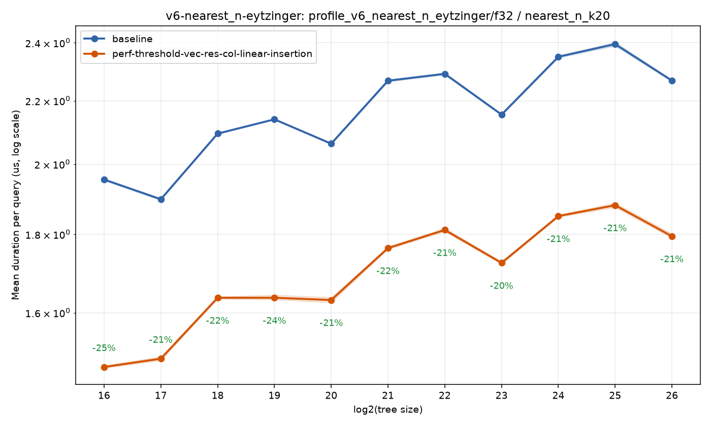
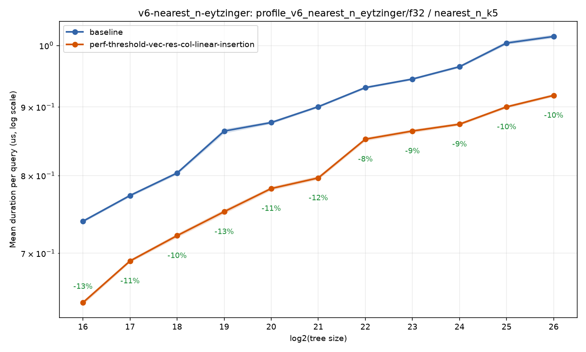
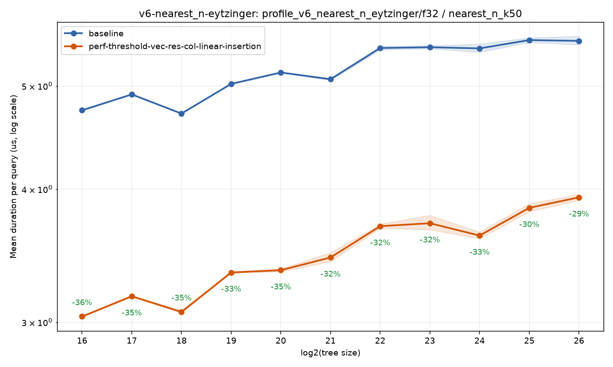
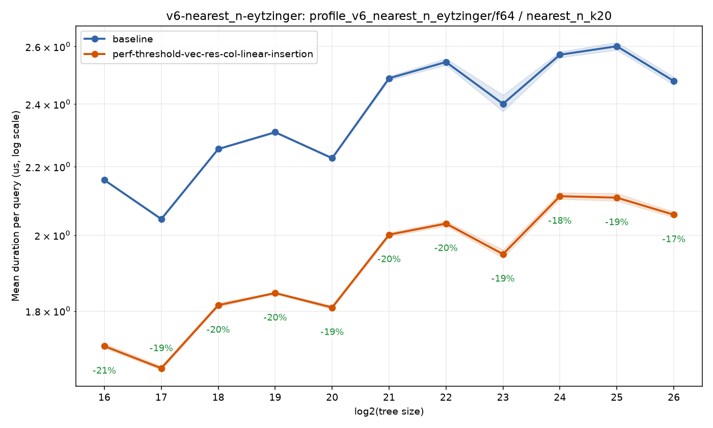
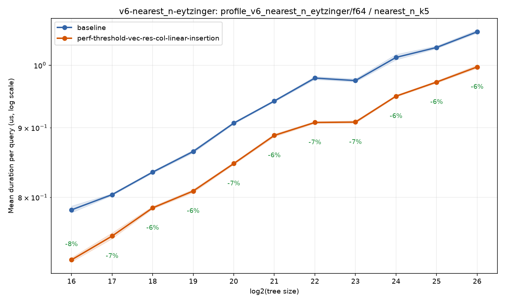
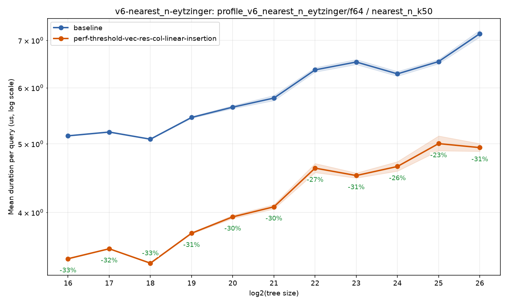
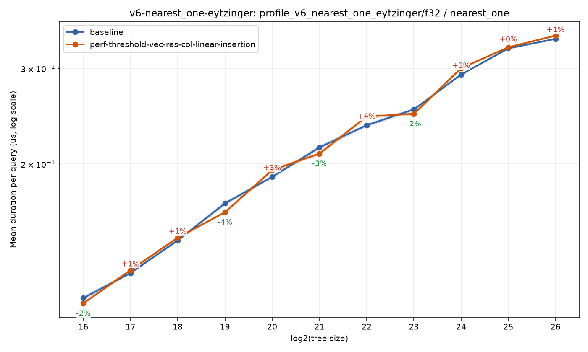
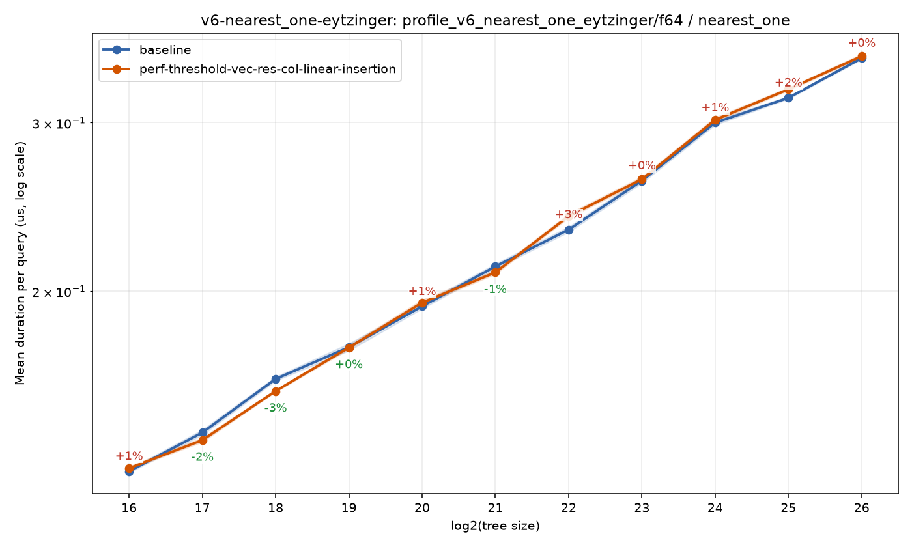

Home
Benchmark run: perf/threshold-vec-res-col-linear-insertion
bef5d8efa60559f7725935b360bbb782b92f4b4f · 2026-07-21T07:09:08Z
Branch comparison run
Compared against baseline run 20260720T195227Z-dd52b40bdf2e.
https://sdd-org.github.io/kiddo/branches/perf-threshold-vec-res-col-linear-insertion/history/20260721T070908Z-bef5d8efa605/index.html
bench_result-v6-nearest_n-eytzinger-f32-nearest_n_k20-perf-threshold-vec-res-col-linear-insertion.png

bench_result-v6-nearest_n-eytzinger-f32-nearest_n_k5-perf-threshold-vec-res-col-linear-insertion.png

bench_result-v6-nearest_n-eytzinger-f32-nearest_n_k50-perf-threshold-vec-res-col-linear-insertion.png

bench_result-v6-nearest_n-eytzinger-f64-nearest_n_k20-perf-threshold-vec-res-col-linear-insertion.png

bench_result-v6-nearest_n-eytzinger-f64-nearest_n_k5-perf-threshold-vec-res-col-linear-insertion.png

bench_result-v6-nearest_n-eytzinger-f64-nearest_n_k50-perf-threshold-vec-res-col-linear-insertion.png

bench_result-v6-nearest_one-eytzinger-f32-nearest_one-perf-threshold-vec-res-col-linear-insertion.png

bench_result-v6-nearest_one-eytzinger-f64-nearest_one-perf-threshold-vec-res-col-linear-insertion.png
